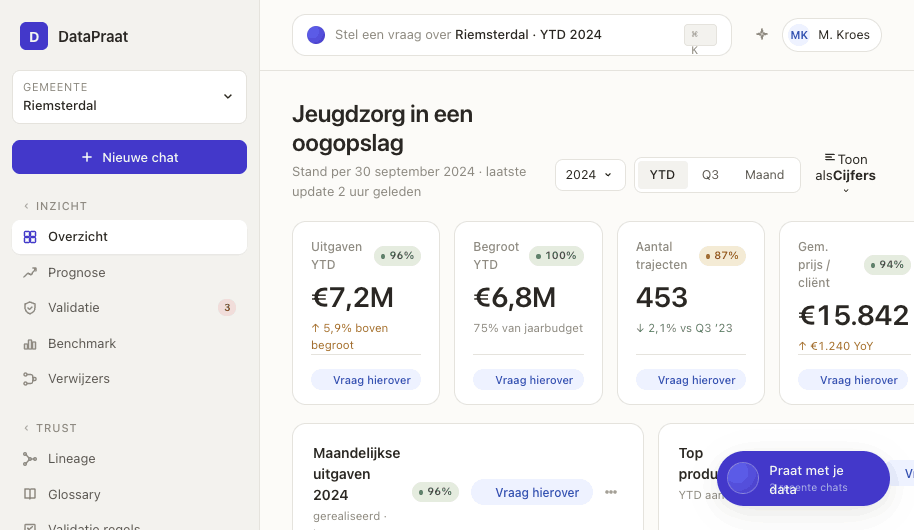
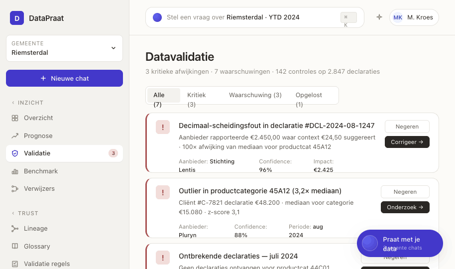
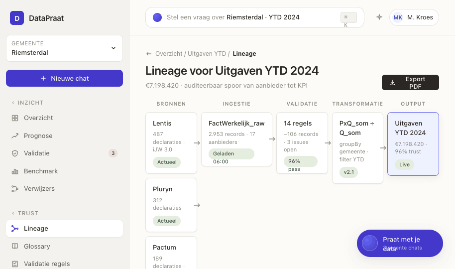

Eindelijk écht praten met je data. Stel je vraag in gewone taal en krijg antwoord.
Voor wie? Leidinggevenden, beleidsadviseurs, data-analisten en financials bij gemeenten werkzaam in het Sociaal Domein.
Wat is het? Eén plek waar we brondata van aanbieders samenbrengen, controleren, en bevraagbaar maken in gewone taal — via dashboard én chat.
Wat DataPraat uniek maakt
Brondata die klopt
DataPraat controleert elke declaratie via 80+ validatieregels — van verdwaalde komma's tot onmogelijke waarden. Wat blijft staan krijgt een betrouwbaarheidsscore, met uitleg.
Elke KPI terug naar de bron
Vraagt de accountant waar een cijfer vandaan komt? Klik erop en laat het hele pad zien — van aanbieder tot KPI.
Cijfers die zichzelf uitleggen
Vraag wat je wilt — "waarom piekten de kosten in augustus?" — en krijg het antwoord in de vorm die past: grafiek, tabel of verhaal in gewone taal.
Hoe het eruit ziet

Jeugdzorg in een oogopslag
Vier KPI's, elk met een trust-badge die laat zien hoe zeker het cijfer is. Klik op "Vraag hierover" en je bent direct in gesprek met de data eronder.

Praten in plaats van klikken
Vragen-bibliotheek per thema — overzicht, trend, benchmark, prognose, verwijzers, anomalieën. Gemeente en periode zijn vastgepind als context-chips.

Datakwaliteit die zichzelf aanwijst
142 automatische controles op 2.847 declaraties vinden decimaal-fouten, outliers en ontbrekende periodes — met aanbieder, impact en actieknoppen.

Het spoor van bron tot KPI
Van ruwe iJW-levering naar gepubliceerd getal in vijf stappen. Elk knooppunt is aanklikbaar en exporteerbaar als PDF — voor accountant of intern auditteam.